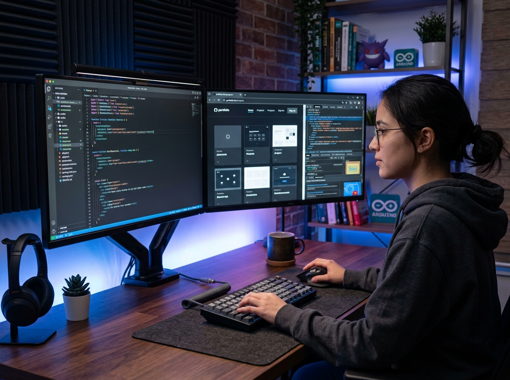

Learn Skills. Build Your Future.
SkillHub provides modern, project-driven computer science education. Master HTML & CSS, JavaScript, React, Next.js, Python, and Full Stack architecture with industry architects.

Career-Ready Projects
From fundamentals to full-stack cloud
Verified Certificate
Industry Credential
Real Pull Requests


Popular & High-Demand Courses
Curated learning paths designed to take you from foundational syntax to shipping production-ready systems.
HTML & CSS Modern Web Foundations
Master semantic HTML5, modern CSS Grid, Flexbox, responsive layouts, and accessible UI development.


Modern JavaScript (ES6+ & Async Mastery)
Master the JavaScript engine, closures, event loop, asynchronous promises, DOM, and clean ESNext.

React.js Modern Architecture & Hooks
Build reactive, high-performance web apps with React 19, custom hooks, state machines, and memoization.
Next.js Full Stack & App Router Production
Master Server Components, Server Actions, Route Handlers, Streaming SSR, and SEO in Next.js.


Python Core to Data & Backend Systems
From core Python syntax to OOP, functional idioms, file I/O, data analysis with Pandas, and automation.


Node.js Enterprise Backend & APIs
Build scalable REST & GraphQL APIs, microservices, authentication with JWT, and high-performance Express servers.
Engineered for Real Career Outcomes
Traditional bootcamps rely on shallow exercises. SkillHub prioritizes deep conceptual understanding and real-world system patterns.
Industry-Tested Curriculum
Every project and concept is designed by working staff engineers from top technology companies. No outdated syntax or toy examples.
Interactive Hands-On Code Labs
Learn by actively building. Practice with interactive coding exercises, quizzes, and live project deliverables evaluated instantly.
Verified Skill Certificates
Earn credentialed certificates of completion that demonstrate concrete mastery to recruiters and hiring managers worldwide.
Self-Paced with Mentor Accountability
Study on your own schedule while benefiting from milestone tracking, interactive progress monitors, and community code reviews.
Verified Student Reviews
Hear from graduates who transformed their engineering trajectories through SkillHub.
"SkillHub’s Full Stack curriculum was the turning point in my career. The lessons avoid shallow fluff and delve straight into actual architectural patterns used in production teams. I landed my first senior role within 3 months of completing the curriculum."

Elena Rostova
Software Engineer · Vercel Ecosystem
"The React and Next.js courses are the best technical content I have experienced. The explanations of Server Components, performance profiling, and custom hook architectures are unmatched by standard bootcamps."

David Chen
Frontend Developer · Fintech Hub
"The Node.js and MongoDB courses gave me the confidence to redesign our company’s core payment microservice. Clean video tutorials, realistic code exercises, and active quizzes kept me engaged every single day."

Amara Okafor
Backend Engineer · CloudScale Inc.
Ready to Accelerate Your Tech Career?
Join thousands of developers leveling up their technical competence. Enroll in courses today and earn verified industry certificates.